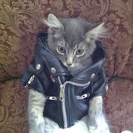

All About Me
What is your name?
Carly!
Where are you from?
North Carolina!
When is your birthday?
September 21st!
Why did you choose to study Communication Design?
I love typography and graphic design!
What are you most inspired by?
I am most inspired by posters (specifically punk), films, and music!
What has been your favorite class so far? Why?
My favortie class so far has been Core Studio: Typography!
What are you hoping to learn in this class?
I am hoping to learn how to diginally bring to life my art style!
What do you like to do in your spare time?
I like to spend my spare time at concerts!
When you imagine a graphic designer, what do you think they do on a day to day?
I think they go to their job and create graphics digitally for their team!
When you imagine a developer, what do you th ink they do on a day to day?
I think a developer codes websites for their compnay!
Where do you see yourself after graduating? What kind of job do you want to have?
I want to be creating graphics and code for either a company or a design studio!
Do you consider yourself an artist, a designer, both, or neither?
I consider myself more of an artist!
What kind of design classes have you taken before this one?
I have taken a few design courses where we went over the principals of type and another based on code!
Do you know most of the students in our class already?
Casually, yes!
List your favorite typefaces.
- Druk
- Cooper Black
- Sabbath Black
- Univers
What are you top 3 favorite colors?
Red, black, white!
Which artists do you like?
Robert Crumb, Rebecca Morgan, Joan Cornella and Sam Ryser!
List out some music that you like to listen to
I listen to Classic Punk, Post Punk, New Wave, Industrial, Noise, Classic Rock and Indie!
Did anything interesting happen over winter break?
My boyfriend broke up with me and I went to California!
Have you ever built a website?
Yes I have!
Do you have any questions for me?
What is your favorite analog technique?
What is your first memory of using the internet?
My first memory of using the internet is playing Call of Duty Black Ops!
Do you have a favorite place to visit?
Lisbon, Portugal!
Do you speak any other languages?
No!
What is your favorite food?
I love ruben sandwiches!
What is your favorite animal?
Tiger!
Do you have a pet?
A cat in NC!
Is there any other information you’d like me to know?
Nope!